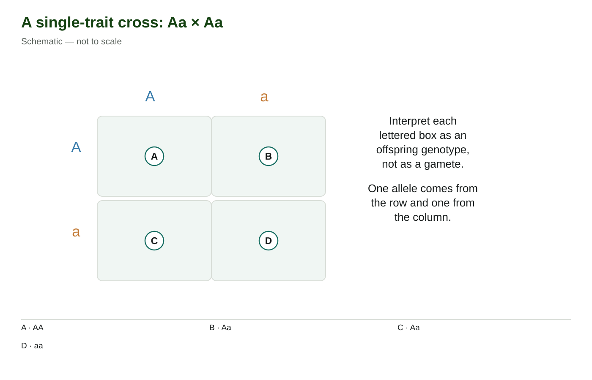
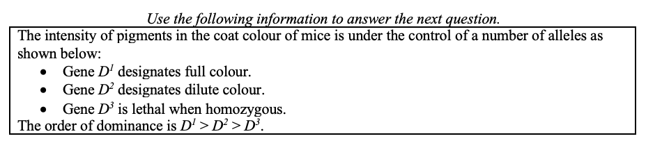
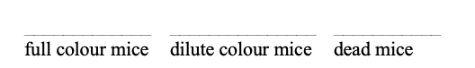
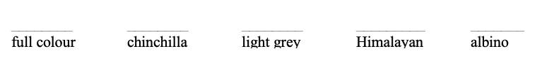

<section class="course-page" hidden="" id="lesson-03"><div class="p2-topic"><header class="page-header"><p class="eyebrow">Learn · Chapter 17</p><h1 data-canvas-edit-key="ch17-l03-title" data-canvas-helper-edit-key="ch17-l03-title">Single-trait crosses and probability</h1><p class="lesson-question">How do you turn parental genotypes into an offspring prediction?</p><div class="goal-strip"><div><p class="section-label">Learning goal</p><p data-canvas-edit-key="ch17-l03-goal" data-canvas-helper-edit-key="ch17-l03-goal">Construct and interpret a monohybrid Punnett square, distinguish genotype and phenotype probabilities, and state the denominator.</p></div><div><p class="section-label">Before you begin</p><p data-canvas-edit-key="ch17-l03-prior" data-canvas-helper-edit-key="ch17-l03-prior">Aa forms A and a gametes under ordinary segregation. Expected ratios describe probabilities, not fixed family sequences.</p></div></div><details class="page-guide"><summary><strong>How to complete this lesson</strong> Learn → worked example → practise → lesson check</summary><div class="guide-body"><ol><li>Read the explanation and its diagrams. Open a bold term when you need a definition.</li><li>Follow the worked example, then try both supported questions. Select <strong>Check answer</strong> for feedback.</li><li>Open the required check and select <strong>Start</strong>. Correct both selections to unlock writing.</li><li>Write each explanation and select its <strong>Save written response</strong> button. Editing saved writing makes it a draft again.</li><li>Select <strong>Submit and finish</strong> to complete the check. Find your records in <strong>All My Work</strong>.</li></ol><p><strong>Expected work:</strong> one completed lesson check. Supported practice, videos and textbook questions are optional. Saved writing is not automatically graded.</p></div></details><div class="textbook-band"><div><strong>Optional embedded reading</strong><p>Chapter 17 · printed pp. 589–591</p></div><p><a data-open-pdf="589" href="#textbook-library">Open p. 589</a> · <a data-open-pdf="591" href="#textbook-library">Open p. 591</a></p></div><p class="terms-line lesson-term-strip"><strong>Key terms:</strong> <button aria-haspopup="dialog" class="bio-term" data-term-id="ch17-word-punnett-square" type="button">Punnett square</button> · <button aria-haspopup="dialog" class="bio-term" data-term-id="ch17-word-monohybrid-cross" type="button">monohybrid cross</button> · <button aria-haspopup="dialog" class="bio-term" data-term-id="ch17-word-probability" type="button">probability</button> · <button aria-haspopup="dialog" class="bio-term" data-term-id="ch17-word-expected-number" type="button">expected number</button></p><details class="vocab-help lesson-vocabulary-help"><summary>Vocabulary help</summary><section aria-labelledby="lesson-03-anchor-words" class="lesson-words"><p class="section-label">Key terms</p><h2 id="lesson-03-anchor-words">Words for this lesson</h2><p>Use these definitions when you need help with a term.</p><dl><div><dt><button aria-haspopup="dialog" class="bio-term" data-term-id="ch17-word-punnett-square" type="button">Punnett square</button></dt><dd>A table combining possible parental gametes to organize offspring genotypes.</dd></div><div><dt><button aria-haspopup="dialog" class="bio-term" data-term-id="ch17-word-monohybrid-cross" type="button">monohybrid cross</button></dt><dd>A cross between individuals heterozygous for one studied gene.</dd></div><div><dt><button aria-haspopup="dialog" class="bio-term" data-term-id="ch17-word-probability" type="button">probability</button></dt><dd>The expected proportion of an outcome under specified conditions.</dd></div><div><dt><button aria-haspopup="dialog" class="bio-term" data-term-id="ch17-word-expected-number" type="button">expected number</button></dt><dd>The predicted count obtained by multiplying a probability by the sample size.</dd></div></dl></section></details></header><div class="content-section" data-canvas-edit-key="ch17-l03-teaching-01" data-canvas-helper-edit-key="ch17-l03-teaching-01" id="ch17-l03-teaching-01"><h2>Write gametes, not whole parental genotypes, on the edges</h2><p data-canvas-edit-key="ch17-l03-teaching-01-p1" data-canvas-helper-edit-key="ch17-l03-teaching-01-p1">A <button aria-haspopup="dialog" class="bio-term" data-term-id="ch17-word-punnett-square" type="button">Punnett square</button> organizes combinations of gametes. For Aa × aa, the first parent produces A or a gametes; the second produces only a. Place those gametes on the edges and combine one from each parent in each cell.</p><p data-canvas-edit-key="ch17-l03-teaching-01-p2" data-canvas-helper-edit-key="ch17-l03-teaching-01-p2">The resulting possibilities are Aa and aa in equal proportions. With complete dominance, half are expected to have the dominant <button aria-haspopup="dialog" class="bio-term" data-term-id="ch17-word-phenotype" type="button">phenotype</button> and half the recessive phenotype. The square shows why the 1:1 ratio applies; a 3:1 ratio would be the wrong shortcut for this cross.</p><figure class="science-figure" data-figure-id="ch17-punnett"><div class="figure-toolbar"><strong>A single-trait cross: Aa × Aa</strong><button class="text-link" data-enlarge-figure="ch17-punnett" type="button">View larger</button></div><figcaption>Each row and column represents a gamete. Four equally likely combinations give a 1:2:1 genotype ratio under the stated model. A is completely dominant to a. Schematic — not to scale.</figcaption></figure></div><div class="content-section" data-canvas-edit-key="ch17-l03-teaching-02" data-canvas-helper-edit-key="ch17-l03-teaching-02" id="ch17-l03-teaching-02"><h2>Count the outcome that was actually asked for</h2><p data-canvas-edit-key="ch17-l03-teaching-02-p1" data-canvas-helper-edit-key="ch17-l03-teaching-02-p1">For Aa × Aa, the four equally likely combinations are AA, Aa, aA and aa. Grouping the two heterozygous combinations gives probabilities of 1/4 AA, 1/2 Aa and 1/4 aa. The dominant phenotype has <button aria-haspopup="dialog" class="bio-term" data-term-id="ch17-word-probability" type="button">probability</button> 3/4 under complete dominance.</p><p data-canvas-edit-key="ch17-l03-teaching-02-p2" data-canvas-helper-edit-key="ch17-l03-teaching-02-p2"><button aria-haspopup="dialog" class="bio-term" data-term-id="ch17-word-genotype" type="button">Genotype</button> probability and phenotype probability therefore can differ. “Heterozygous” refers to two of the four combinations, while “dominant phenotype” includes three. Mark the requested group before choosing your numerator.</p><p data-canvas-edit-key="ch17-l03-teaching-02-p3" data-canvas-helper-edit-key="ch17-l03-teaching-02-p3">When converting to an <button aria-haspopup="dialog" class="bio-term" data-term-id="ch17-word-expected-number" type="button">expected number</button>, multiply by the total. If 80 offspring each have a 1/4 chance of aa, the expected number is 80 × 0.25 = 20. The result is an expectation, not a promise.</p></div><div class="content-section" data-canvas-edit-key="ch17-l03-teaching-03" data-canvas-helper-edit-key="ch17-l03-teaching-03" id="ch17-l03-teaching-03"><h2>Independent offspring do not compensate for earlier outcomes</h2><p data-canvas-edit-key="ch17-l03-teaching-03-p1" data-canvas-helper-edit-key="ch17-l03-teaching-03-p1">In the simple model, one offspring's genotype does not force the next offspring to be different. If two Aa parents have several dominant-phenotype offspring, the modeled probability for the next offspring is still 1/4 recessive.</p><p data-canvas-edit-key="ch17-l03-teaching-03-p2" data-canvas-helper-edit-key="ch17-l03-teaching-03-p2">For specified independent events, multiply probabilities. Two recessive offspring in a row from Aa × Aa have probability 1/4 × 1/4 = 1/16. Do not confuse this ordered event with “at least one recessive among two,” which asks for a different set of outcomes.</p><p data-canvas-edit-key="ch17-l03-teaching-03-p3" data-canvas-helper-edit-key="ch17-l03-teaching-03-p3">State assumptions such as complete dominance and ordinary segregation. They determine which genotype combinations count toward a phenotype.</p></div><div class="worked-example" data-canvas-edit-key="ch17-l03-worked" data-canvas-helper-edit-key="ch17-l03-worked" id="ch17-l03-worked"><p class="section-label">Worked example</p><h3>Predict a phenotype and an expected count</h3><p>In a stated complete-dominance model, Tt is crossed with tt. Predict the fraction and expected number of recessive offspring among 60.</p><ol><li>Tt produces T and t gametes; tt produces t gametes.</li><li>The equally likely combinations are Tt and tt.</li><li>The recessive phenotype is tt, probability 1/2.</li><li>Expected number = 60 × 1/2 = 30.</li><li>Check: the other expected 30 have the dominant phenotype; observed counts can vary.</li></ol></div><section class="content-section guided-practice" data-canvas-edit-key="ch17-l03-guided" data-canvas-helper-edit-key="ch17-l03-guided" id="ch17-l03-guided"><h2>Practise with support</h2><h3>Apply the explanation</h3><p>Try both questions. Use the hint to revise your thinking after an incorrect answer.</p><div class="practice-question" data-guided-item="ch17-l03-guided-q1"><label for="ch17-l03-guided-q1">For Bb × Bb, what fraction is heterozygous?</label><select id="ch17-l03-guided-q1"><option value="">Choose an answer</option><option value="1/4">1/4</option><option value="1/2">1/2</option><option value="3/4">3/4</option></select><div class="actions"><button data-guided-check="" type="button">Check answer</button></div><p aria-live="polite" data-revision-feedback="" role="status"></p></div><div class="practice-question" data-guided-item="ch17-l03-guided-q2"><label for="ch17-l03-guided-q2">For Aa × aa, what is the expected number of aa offspring among 100?</label><select id="ch17-l03-guided-q2"><option value="">Choose an answer</option><option value="25">25</option><option value="75">75</option><option value="50">50</option></select><div class="actions"><button data-guided-check="" type="button">Check answer</button></div><p aria-live="polite" data-revision-feedback="" role="status"></p></div></section><div class="stop-check"><p class="section-label">Stop and think</p><h2>Try this before opening the explanation</h2><p>Why should the square’s edges contain A or a rather than Aa?</p><details><summary>Show the explanation</summary><p>The edges represent gametes, which carry one allele at the studied locus.</p></details></div><aside class="video-companion"><div class="video-copy"><p class="eyebrow">Optional video support</p><h3>Single-trait crosses and probability — video support</h3><p><strong>As you watch:</strong> Construct and interpret a monohybrid Punnett square, distinguish genotype and phenotype probabilities, and state the denominator.</p><p class="resource-note">Optional video. Internet access is required. The explanation below covers the idea without the video.</p><a href="https://www.youtube.com/watch?v=Mehz7tCxjSE" rel="noopener noreferrer" target="_blank">Open on YouTube</a></div><div class="video-visual"><div class="video-stage" data-video-stage="Mehz7tCxjSE"><button data-play-video="Mehz7tCxjSE" type="button">Load video</button></div><div class="concept-summary"><h4>Read the explanation</h4><p>For Aa × Aa, the four equally likely combinations are AA, Aa, aA and aa. Grouping the two heterozygous combinations gives probabilities of 1/4 AA, 1/2 Aa and 1/4 aa. The dominant phenotype has probability 3/4 under complete dominance. Genotype probability and phenotype probability therefore can differ. “Heterozygous” refers to two of the four combinations, while “dominant phenotype” includes three. Mark the requested group before choosing your numerator. When converting to an expected number, multiply by the total. If 80 offspring each have a 1/4 chance of aa, the expected number is 80 × 0.25 = 20. The result is an expectation, not a promise.</p></div></div></aside><aside class="video-companion"><div class="video-copy"><p class="eyebrow">Optional video support</p><h3>Single-trait crosses and probability — video support 2</h3><p><strong>As you watch:</strong> Construct and interpret a monohybrid Punnett square, distinguish genotype and phenotype probabilities, and state the denominator.</p><p class="resource-note">Optional video. Internet access is required. The explanation below covers the idea without the video.</p><a href="https://www.youtube.com/watch?v=i-0rSv6oxSY" rel="noopener noreferrer" target="_blank">Open on YouTube</a></div><div class="video-visual"><div class="video-stage" data-video-stage="i-0rSv6oxSY"><button data-play-video="i-0rSv6oxSY" type="button">Load video</button></div><div class="concept-summary"><h4>Read the explanation</h4><p>For Aa × Aa, the four equally likely combinations are AA, Aa, aA and aa. Grouping the two heterozygous combinations gives probabilities of 1/4 AA, 1/2 Aa and 1/4 aa. The dominant phenotype has probability 3/4 under complete dominance. Genotype probability and phenotype probability therefore can differ. “Heterozygous” refers to two of the four combinations, while “dominant phenotype” includes three. Mark the requested group before choosing your numerator. When converting to an expected number, multiply by the total. If 80 offspring each have a 1/4 chance of aa, the expected number is 80 × 0.25 = 20. The result is an expectation, not a promise.</p></div></div></aside><details class="activity-disclosure"><summary>Open required check · Single-trait crosses and probability</summary><section class="activity" data-check-id="ch17-check-03" data-required-check=""><h2>Explain what you have learned</h2><p class="required-note">This check counts toward chapter progress. Correct the 2 selections to unlock 2 written explanations. Saving writing records your response; it does not grade its accuracy.</p><div class="run-head"><div class="actions"><button data-start-check="" type="button">Start</button><button data-redo-check="" hidden="" type="button">Redo this check</button></div><span class="timer" data-check-timer="">Not started</span></div><p aria-live="polite" class="run-status" data-check-status=""></p><fieldset data-check-body="" disabled=""><legend class="sr-only">Required chapter check</legend><div class="check-question" data-check-question="ch17-l03-check-mc-1"><p class="eyebrow">Selection 1</p><h3 data-canvas-edit-key="ch17-l03-check-mc-1-prompt" data-canvas-helper-edit-key="ch17-l03-check-mc-1-prompt" id="ch17-l03-check-mc-1-prompt">Under complete dominance, AA × Aa can produce which phenotypes?</h3><fieldset aria-labelledby="ch17-l03-check-mc-1-prompt"><label class="choice-row"><input data-check-choice="ch17-l03-check-mc-1" name="ch17-l03-check-mc-1" type="radio" value="Only the dominant phenotype"/><span>Only the dominant phenotype</span></label><label class="choice-row"><input data-check-choice="ch17-l03-check-mc-1" name="ch17-l03-check-mc-1" type="radio" value="A fixed 3:1 dominant-to-recessive ratio"/><span>A fixed 3:1 dominant-to-recessive ratio</span></label><label class="choice-row"><input data-check-choice="ch17-l03-check-mc-1" name="ch17-l03-check-mc-1" type="radio" value="Only the recessive phenotype"/><span>Only the recessive phenotype</span></label><label class="choice-row"><input data-check-choice="ch17-l03-check-mc-1" name="ch17-l03-check-mc-1" type="radio" value="A fixed 1:1 dominant-to-recessive ratio"/><span>A fixed 1:1 dominant-to-recessive ratio</span></label></fieldset><button data-check-answer="ch17-l03-check-mc-1" type="button">Check answer</button><p aria-live="polite" class="inline-feedback" data-feedback=""></p></div><div class="check-question" data-check-question="ch17-l03-check-mc-2"><p class="eyebrow">Selection 2</p><h3 data-canvas-edit-key="ch17-l03-check-mc-2-prompt" data-canvas-helper-edit-key="ch17-l03-check-mc-2-prompt" id="ch17-l03-check-mc-2-prompt">Aa × Aa has already produced three aa offspring. What is the probability that the next is aa in the independent model?</h3><fieldset aria-labelledby="ch17-l03-check-mc-2-prompt"><label class="choice-row"><input data-check-choice="ch17-l03-check-mc-2" name="ch17-l03-check-mc-2" type="radio" value="0"/><span>0</span></label><label class="choice-row"><input data-check-choice="ch17-l03-check-mc-2" name="ch17-l03-check-mc-2" type="radio" value="1/4"/><span>1/4</span></label><label class="choice-row"><input data-check-choice="ch17-l03-check-mc-2" name="ch17-l03-check-mc-2" type="radio" value="1"/><span>1</span></label><label class="choice-row"><input data-check-choice="ch17-l03-check-mc-2" name="ch17-l03-check-mc-2" type="radio" value="3/4"/><span>3/4</span></label></fieldset><button data-check-answer="ch17-l03-check-mc-2" type="button">Check answer</button><p aria-live="polite" class="inline-feedback" data-feedback=""></p></div><p class="unlock-message" data-unlock-message="">Answer the selections correctly to unlock the writing.</p><fieldset data-writing-gate="" disabled=""><legend class="sr-only">Written explanations</legend><div class="writing-question" data-writing-question="ch17-l03-check-writing-1"><p class="eyebrow">Written explanation 1</p><label data-canvas-edit-key="ch17-l03-check-writing-1-prompt" data-canvas-helper-edit-key="ch17-l03-check-writing-1-prompt" for="ch17-l03-check-writing-1">Show how to obtain genotype and phenotype probabilities for Bb × bb when B is completely dominant.</label><textarea aria-describedby="ch17-l03-check-writing-1-status" data-check-writing="ch17-l03-check-writing-1" data-limit="3200" id="ch17-l03-check-writing-1" rows="6"></textarea><p class="writing-status">Maximum 3200 characters. Explain the biology in your own words.</p><button data-save-writing="ch17-l03-check-writing-1" type="button">Save written response</button><p aria-live="polite" class="writing-status" data-writing-status="" id="ch17-l03-check-writing-1-status"></p><details data-locked="true"><summary>Compare after saving your own response</summary><p>The heterozygote produces B or b gametes and bb produces b. The combinations are Bb and bb, each with probability 1/2. Therefore the expected genotype ratio is 1:1 and the expected dominant-to-recessive phenotype ratio is also 1:1.</p><div class="answer-criteria"><strong>Check your explanation for:</strong><ul><li>Identifies the relevant structures or quantities.</li><li>Explains the causal relationship or calculation, not just the final result.</li><li>Uses the stated evidence and avoids a stronger conclusion than it supports.</li></ul></div></details></div><div class="writing-question" data-writing-question="ch17-l03-check-writing-2"><p class="eyebrow">Written explanation 2</p><label data-canvas-edit-key="ch17-l03-check-writing-2-prompt" data-canvas-helper-edit-key="ch17-l03-check-writing-2-prompt" for="ch17-l03-check-writing-2">Explain why a predicted count of 25 recessive offspring among 100 is not a guarantee.</label><textarea aria-describedby="ch17-l03-check-writing-2-status" data-check-writing="ch17-l03-check-writing-2" data-limit="3200" id="ch17-l03-check-writing-2" rows="6"></textarea><p class="writing-status">Maximum 3200 characters. Explain the biology in your own words.</p><button data-save-writing="ch17-l03-check-writing-2" type="button">Save written response</button><p aria-live="polite" class="writing-status" data-writing-status="" id="ch17-l03-check-writing-2-status"></p><details data-locked="true"><summary>Compare after saving your own response</summary><p>The count is an expectation from a 1/4 probability multiplied by 100. Individual gamete combinations are chance events, so the observed count can differ. The model predicts a distribution of possibilities rather than an exact scheduled sequence.</p><div class="answer-criteria"><strong>Check your explanation for:</strong><ul><li>Identifies the relevant structures or quantities.</li><li>Explains the causal relationship or calculation, not just the final result.</li><li>Uses the stated evidence and avoids a stronger conclusion than it supports.</li></ul></div></details></div></fieldset><div class="actions"><button data-finish-check="" type="button">Submit and finish</button></div></fieldset></section></details><details class="activity-disclosure optional-disclosure"><summary>Additional written application 1</summary><div class="activity"><p>This is optional written practice. It does not change required progress.</p><figure class="science-figure"><figcaption>Use the diagram or data with the question.</figcaption></figure><figure class="science-figure"><figcaption>Use the diagram or data with the question.</figcaption></figure><div class="optional-writing"><label for="ch17-source-written-OBJ_2131244">The P 1 cross is between a full colour male ( D 1 D 3 ) and dilute colour female ( D 2 D 3 ). Calculate the theoretical probability of producing the F 1 phenotypes shown below. Show the calculation or sequence and explain your reasoning. Use only the supplied evidence; do not invent observations.</label><textarea aria-describedby="ch17-source-written-OBJ_2131244-status" data-note-input="ch17-source-written-OBJ_2131244" id="ch17-source-written-OBJ_2131244" rows="5"></textarea><p class="writing-status" data-note-status="ch17-source-written-OBJ_2131244" id="ch17-source-written-OBJ_2131244-status">Optional response. Select Save response to collect it. Maximum 5000 characters.</p><button data-save-note="ch17-source-written-OBJ_2131244" type="button">Save response</button></div></div></details><details class="activity-disclosure optional-disclosure"><summary>Additional written application 3</summary><div class="activity"><p>This is optional written practice. It does not change required progress.</p><figure class="science-figure"><figcaption>Use the diagram or data with the question.</figcaption></figure><div class="optional-writing"><label for="ch17-source-written-OBJ_2131248">In the second cross, a full colour rabbit ( CC a ) is mated to a light grey rabbit ( C ch C a ). Calculate the theoretical probability of this cross producing each of the following phenotypes shown below. Show the calculation or sequence and explain your reasoning. Use only the supplied evidence; do not invent observations.</label><textarea aria-describedby="ch17-source-written-OBJ_2131248-status" data-note-input="ch17-source-written-OBJ_2131248" id="ch17-source-written-OBJ_2131248" rows="5"></textarea><p class="writing-status" data-note-status="ch17-source-written-OBJ_2131248" id="ch17-source-written-OBJ_2131248-status">Optional response. Select Save response to collect it. Maximum 5000 characters.</p><button data-save-note="ch17-source-written-OBJ_2131248" type="button">Save response</button></div></div></details><nav aria-label="Previous and next topics" class="lesson-footer"><a href="#lesson-02">← Mendel’s experiments and segregation</a><a class="next" href="#lesson-04">Next: Test crosses and unknown genotypes →</a></nav><div class="content-section textbook-practice-lesson-link"><a data-textbook-topic="lesson-03" href="#textbook-practice">Optional textbook practice for Single-trait crosses and probability</a></div></div></section>